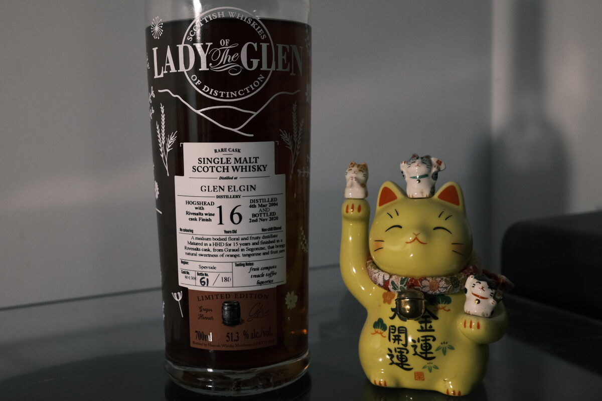

Glen Elgin 2004 Lady of the Glen 16 years 51.3% (Rivesaltes finish)
Fifteen years in a hogshead, finished in a Rivesaltes cask and then charged into a rather attractive bottle. Rivesaltes is a French sweet fortified. And that cask did a number on this one.
Colour Dark amber, ruby
Nose Yes please. Treacle and honey. Cinnamon buns. Buttery panettone stuffed to the brim with candied orange peel and raisins. A keen edge of sweet acidity: lemon candies and apple juice. Cinnamon and vanilla. Aromatic and moreish. Skip dessert on the nose alone. Pepitas and marzipan. If you look for it, there is malt, granola, and bread and butter pudding. Much easier with water.
Palate Syrupy and thick. Maple syrup over pancakes, cream. Strong notes of muscat. There’s that heady sweetness, tempered by a whack of acidity. Raisins and dates soaked in orange juice and some lemons. More acidic as the palate continues, and into cinnamon, white pepper, and cayenne. With a bit of water, the fruit juiciness intensifies, and a touch of the malt reveals itself.
Finish Lemon candy, treacle. Gluhwein with vanilla sugar. Long, boozy, like a rum-soaked pudding. Dark chocolate and a waft of mint. Dried fruits (how quaint). A touch of chartreuse. Jaffa cakes. With water, museli.
Comments Very wine forward, to put it politely. For some that may be a downside, it takes a splash of water and a keen lookout (or keen imagination) to reveal the underlying spirit. Though some don’t drink a whisky without an aggressive cask. Either way, the character imparted is just lovely. 88/100.

Posted by Dominic on 04 May 2021